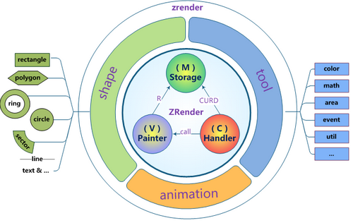

ZRender
http://shnujeff.github.io/zrender-topo/
一个轻量级的Canvas类库，MVC封装，数据驱动，提供类Dom事件模型，让canvas绘图大不同！
Architecture
MVC核心封装实现图形仓库、视图渲染和交互控制：
- Stroage(M) : shape数据CURD管理
- Painter(V) : canvase元素生命周期管理，视图渲染，绘画，更新控制
- Handler(C) : 事件交互处理，实现完整dom事件模拟封装
- shape : 图形实体，分而治之的图形策略，可定义扩展
- tool : 绘画扩展相关实用方法，工具及脚手架

特色
简单
无需canvas基础，精简的接口方法，符合AMD标准，易学易用。
require(
['zrender/zrender'],
function(zrender) {
// just init to get a zrender Instance
var zr = zrender.init(document.getElementById('main'));
// zr can be used now!
...
}
);
数据驱动
利用zrender绘图，你只需做的是定义图形数据，剩下的事情就交给zrender吧~
哦，对了，差点忘记告诉你，只要在你定义图形数据时设置draggable属性为true，图形拖拽就已经可用了！
var CircleShape = require('zrender/shape/Circle');
zr.addShape(
new CircleShape({
style : {
x : 100,
y : 100,
r : 50,
color : 'rgba(220, 20, 60, 0.8)'
}
})
);
zr.render();
完整的事件封装
用你再熟悉不过的dom事件模型去操作canvas里的图形元素是件很cool的事情~
你不仅可以响应zrender全局事件，你甚至可以为在特定shape上添加特定事件，后续发生的一切都会按你想的那样去运行~
var CircleShape = require('zrender/shape/Circle');
zr.addShape(
new CircleShape({
style : {...},
// 图形元素上绑定事件
onmouseover : function(params) {
console.log('catch you!');
}
})
);
// 全局事件
zr.on('click', function(params) {alert('Hello, zrender!')});
高效的分层刷新
正如css中zlevel的作用一样，你可以定义把不同的shape分别放在不同的层中，这不仅实现了视觉上的上下覆盖， 更重要的是当图形元素发生变化后的refresh将局限在发生了变化的图形层中，这在你利用zrender做各种动画效果时将十分有用， 性能自然也更加出色~
zr.addShape(shapeA); // shapeA.zlevel = 0; (default)
zr.addShape(shapeB); // shapeB.zlevel = 1;
zr.render();
zr.modShape(shapeB.id, {color:'red'});
// Don't worry! Is merge!
zr.refresh();
// Just the level 1 canvas has been refresh~
丰富的图形选项
当前内置多种图形元素（圆形、椭圆、圆环、扇形、矩形、多边形、直线、曲线、心形、水滴、路径、文字、图片。Will be more..），统一且丰富的图形属性充分满足你的个性化需求！
var CircleShape = require('zrender/shape/Circle');
var myShape = new CircleShape({
zlevel : 1,
style : {
... // color | strokeColor | text | textFont | ...
},
draggable : true
});
强大的动画支持
提供promise式的动画接口和常用缓动函数，轻松实现各种动画需求~
zr.addShape(newShape);
zr.render();
zr.animate(newShape.id)
.when(1000, { position : [300, 200] })
.when(2000, { position : [30, 400] })
.start('BounceOut');
易于扩展
分而治之的图形定义策略允许你扩展自己独有的图形元素，你既可以完整实现三个接口方法（brush、drift、isCover）， 也可以通过base派生后仅实现你所关心的图形细节。
function MyShape() { ... }
zr.addShape(
new MyShape({ // and use it!
style : {...},
...
})
);
curves测试
<div align="center">
<iframe style="width:819px;height:416px" src="https://github.com/shnujeff/zrender-topo/blob/master/test/curves.html"></iframe>
</div>